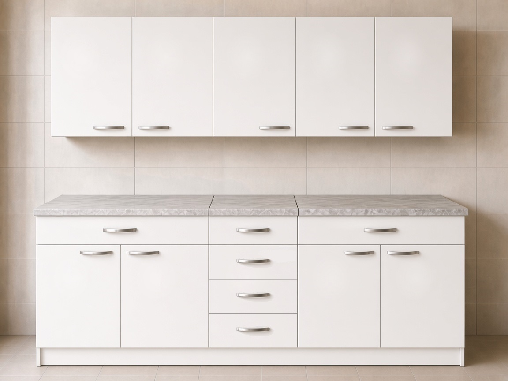

Niša, uglovi, priključci i visina plafona, ne mera „od oka“.
Mala firma od poverenja
Proizvodnja blok kuhinja od 2 metra
Pravimo blok kuhinje od 2 metra, gornje i donje delove. Pet modela u više dezena, pa birate ono što vam odgovara.
Pored prodaje na malo, radimo i prodaju na veliko. Saradnja je otvorena za firme koje žele da preprodaju naše blok kuhinje, uz popust na količinu.
Poručite danas, preuzimanje je za tri dana.
Korpus, front, ploča i okov posebno, da se vidi šta ulazi u cenu.
Sečenje, kantovanje i sklapanje pre nego što elementi stignu na montažu.
Nivelisanje, vezivanje za zid i podešavanje frontova i fioka.
Modeli
Linija kreće od 2 metra
Pet gotovih rasporeda. Dezen je onaj sa fotografije. Dužina na zidu proverava se merenjem.

Zlatni hrast i grafit
Staklene trake, srebrne ručke, ploča u tri dela.

Snežni hrast
Svetli hrast, sudopera i staklo na gornjem elementu.

Grafit i hrast
Crne ručke i sudopera preko desnog elementa.

Zlatni hrast
Dva stakla gore i fiokar u sredini.

Bela polusjaj
Pune stranice i fiokar u sredini.
Tok
Od prvog poziva do montaže
Rok zavisi od frontova i ploče. Dogovara se kad je merenje gotovo i kad su materijali izabrani.
Razgovor
Aparati koje ostaju, gas ili indukcija, i da li se stara kuhinja skida.
Merenje
Zidovi, prozor, radijator, utičnice i mesto dovoda vode.
Izrada
Korpus, frontovi i ugradnja okova u radionici.
Montaža
Postavljanje na licu mesta, ploča, sokl i završno podešavanje.
Materijali
Šta se bira posebno
Model određuje raspored. Dezen određuje izgled iverice. Ploča i okov idu kao posebne stavke u ponudi.
Korpus
Univer 18 mm, ABS kant, rupe za police i okov po šemi elementa.
Dezen
Zlatni hrast, bela ili grafit. Isti izbor na svih pet modela.
Radna ploča
Laminat, kompakt, kvarc, kamen ili drvo. Izrez za sudoperu ide uz ploču.
Okov
Šarke, fioke sa mekim zatvaranjem, podizači, korpe i svetlo ispod gornjih elemenata.
Pitanja
Pre nego što zakažete merenje
Koliko traje izrada?
Rok se kaže posle merenja, kad se zna front i da li se ploča naručuje. Farbani front i kamen duže čekaju od univera i laminata.
Da li merenje ima smisla dok traju radovi?
Može, ali konačna mera ide kad su zidovi, pod i priključci na svom mestu. Ako je stan još u malteru, javite u kom je stadijumu.
Skidate li staru kuhinju?
Može da se dogovori uz montažu. U upitu napišite da li stara kuhinja ostaje do dana montaže.
Od čega zavisi cena?
Od dužine bloka, visokih elemenata, vrste fronta, ploče i okova. Ponuda ide po stavkama, bez jedne okrugle cifre koja krije materijal.
Radite li i plakare?
Osnova radionice su blok kuhinje. Plakar u istoj prostoriji može da se doda ako ulazi u isti materijal i isti termin montaže.
Pošaljite mere koje imate, ili samo fotografije zida
Ako još nema tačne mere, dovoljan je opis prostorije. Merenje radimo na adresi pre izrade.